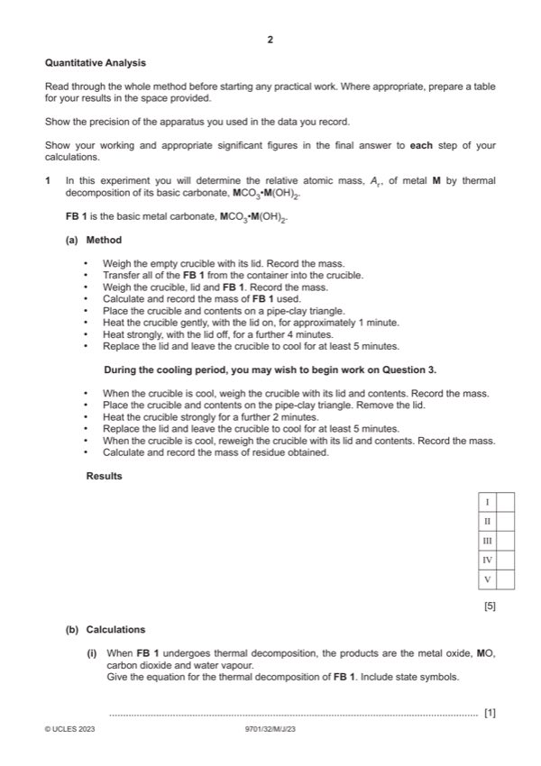
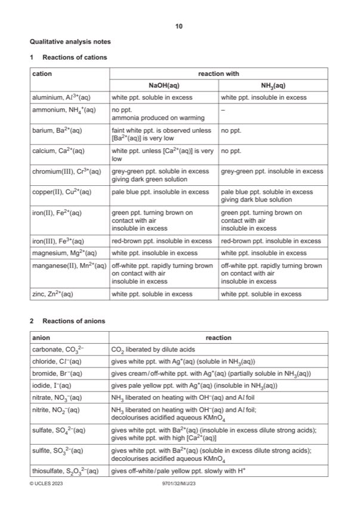

Question 1

Original paper page 2

Original paper page 10
Part 1(a) — solution
- (Mass of) crucible, lid (empty)
- (Mass of) crucible, lid and FB 1 (or “contents before heating”)
- (Mass of) crucible, lid and residue / MO / contents after first heating
- (Mass of) crucible, lid and residue / MO / contents after 2nd heating
- Units must be ‘ / ’ or ‘in’ or “()” AND g or ‘grams’ in column headings or with every entry
- All weighings recorded to same decimal places (2 or 3)
- Fourth weighing is within +0.02 and -0.04 g of third weighing
- These values (with unambiguous headings) must be on page 2
Mark points
- (Mass of) crucible, lid (empty)
- (Mass of) crucible, lid and FB 1 (or “contents before heating”)
- (Mass of) crucible, lid and residue / MO / contents after first heating
- (Mass of) crucible, lid and residue / MO / contents after 2nd heating
- Units must be ‘ / ’ or ‘in’ or “()” AND g or ‘grams’ in column headings or with every entry
- All weighings recorded to same decimal places (2 or 3)
- Fourth weighing is within +0.02 and -0.04 g of third weighing
- These values (with unambiguous headings) must be on page 2
Part 1(b)(i) — solution
MCO3•M(OH)2 (s) 2MO (s) + CO2 (g) + H2O (g) 1
Mark points
- Include the ideas shown in the solution above.
Part 1(b)(ii) — solution
Answer: AND answer to 2–4 significant figures
- n(CO2) = mass lost / (44 + 18)
Mark points
- n(CO2) = mass lost / (44 + 18)
Part 1(b)(iii) — solution
Answer: AND answer to 2–4 significant figures
- Mr = mass of FB 1 used / mol of CO2 produced
Mark points
- Mr = mass of FB 1 used / mol of CO2 produced
Part 1(b)(iv) — solution
Answer: AND answer to 2–4 significant figures
- Ar = [Mr – (60 34)] / 2
Mark points
- Ar = [Mr – (60 34)] / 2
Part 1(c) — solution
Answer: AND mass loss will be greater OR amount (in mol) of CO2 (and water) will be greater · AND amount (in mol) of basic carbonate (calculated) will be greater OR Mr lower
relative atomic mass will be lower 1
AND mass loss will be greater OR amount (in mol) of CO2 (and water) will be greater
AND amount (in mol) of basic carbonate (calculated) will be greater OR Mr lower
Mark points
- Correct result: AND mass loss will be greater OR amount (in mol) of CO2 (and water) will be greater
- Correct result: AND amount (in mol) of basic carbonate (calculated) will be greater OR Mr lower
Part 1(d) — solution
Answer: AND sulfuric acid will not show if the metal hydroxide is still present · OR · AND if decomposition was not complete, residue would fizz with acid OR if decomposition was complete, residue would
student is not correct 1
AND sulfuric acid will not show if the metal hydroxide is still present
OR
student is correct
AND if decomposition was not complete, residue would fizz with acid OR if decomposition was complete, residue would
not fizz with acid OR carries out experiment and gives correct conclusion based on observation
2023 Page 7 of 11
9701/32 Cambridge International AS & A Level – Mark Scheme May/June 2023
Mark points
- Correct result: AND sulfuric acid will not show if the metal hydroxide is still present
- Correct result: OR
- Correct result: AND if decomposition was not complete, residue would fizz with acid OR if decomposition was complete, residue would